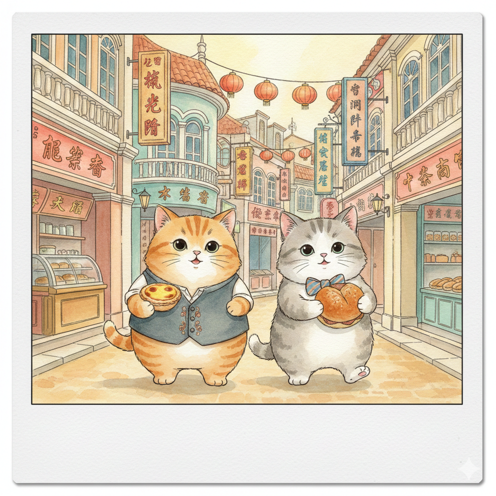

澳門一日遊
跟著小貓去旅行
START
抵達澳門碼頭
AM 上午
歷史城區漫步
PM 中午
官也街美食
官也街美食巡禮

介紹：澳門必吃美食一條街！聚集了安德魯蛋塔、誠昌水蟹粥、莫義記榴槤雪糕及各式豬扒包與手信。
導覽至官也街
跨區：從澳門島（新馬路）搭巴士 33 或 22 往氹仔方向。
發財車：搭乘往「銀河」或「威尼斯人」的接駁車，再經由天橋/自動步道步行約10分鐘。
發財車：搭乘往「銀河」或「威尼斯人」的接駁車，再經由天橋/自動步道步行約10分鐘。
PM 晚上
路氹金光大道